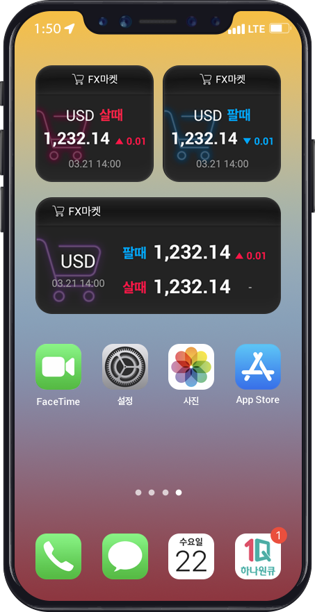
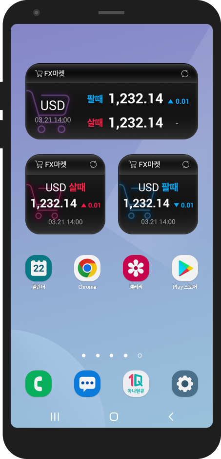
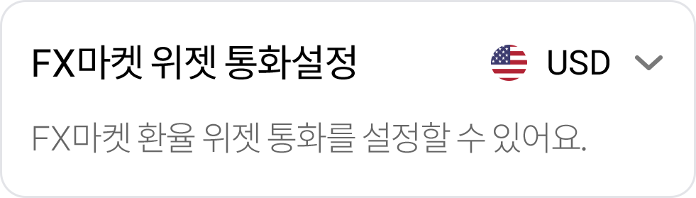

FX마켓 위젯으로
내가 사고 팔 수 있는 환율을
확인할 수 있어요.
※ FX마켓 서비스 미가입 손님은 고시환율로 표시됩니다.

아이폰(IOS)
- 1. 홈화면을 길게 눌러 + 을 클릭합니다.
- 2. 위젯 갤러리에서 ‘하나은행’ 위젯을 검색합니다.
- 3. 원하는 환율위젯을 추가합니다.

안드로이드(Android)
- 1. 홈화면을 길게 눌러 위젯 아이콘을 클릭합니다.
- 2. 위젯 갤러리에서 ‘하나은행’ 위젯 폴더를 선택합니다.
- 3. 원하는 환율위젯을 추가합니다.
위젯 통화를 바꾸고 싶으세요?
FX마켓 마이페이지에서 설정해요.
